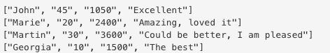

Comma Separated Values
CSV files are basically text files that have data arranged line by line separated by commas. That's where the C in CSV comes from. When you want to use a CSV file inside a Ruby script, you need to require 'CSV' and then read the particular CSV file. Two ways to do this: use CSV.read('filename.csv') to read complete file, or CSV.foreach('filename.csv'){|row_in_file| do_something_to row_in_file} CSV files passed in to Ruby scripts are processed as an array of strings. Take a look at this example of an output of CSV.foreach(). Note that it is different as you use CSV.read
Once you are comfortable with using CSV, you can potentially create instances of an object by passing in a CSV file as arguments to the instantiating of a class. For more information on how to use CSV, check out this site.